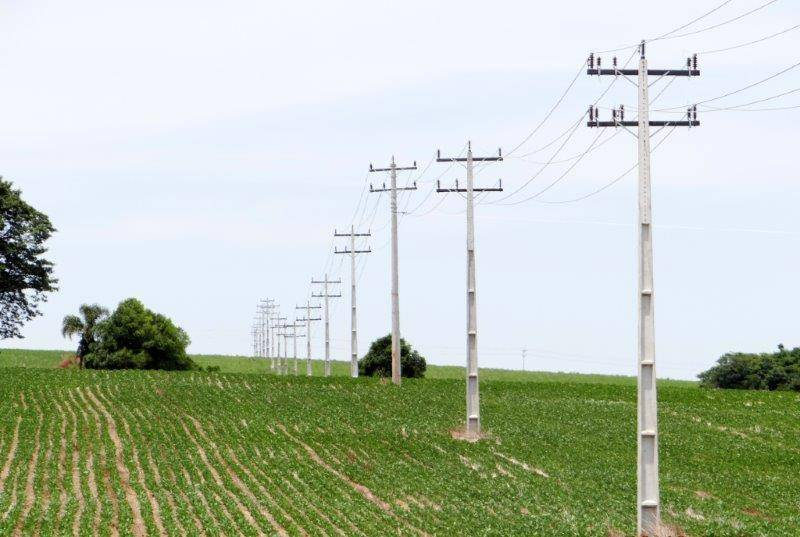

Energia Rural: O Motor da Sustentabilidade no Campo
Explore como a energia impulsiona o desenvolvimento rural sustentável, conectando o campo à inovação e a um futuro mais verde.
Por que a Energia é Vital no Campo?
A disponibilidade de energia confiável e acessível é fundamental para diversas atividades rurais:
- Irrigação e bombeamento de água
- Funcionamento de máquinas e equipamentos agrícolas
- Processamento e armazenamento de produtos
- Iluminação e conforto em residências rurais
- Desenvolvimento de pequenas agroindústrias
Investir em soluções energéticas adequadas não apenas aumenta a produtividade, mas também contribui para a melhoria da qualidade de vida no campo.

Fontes de Energia Sustentável para o Campo

Energia Solar Fotovoltaica
A luz do sol convertida em eletricidade, ideal para regiões com alta irradiação solar. Reduz custos, é limpa e de fácil instalação.
Descobrir mais
Energia Eólica de Pequena Escala
A força dos ventos transformada em energia, especialmente útil em áreas com ventos consistentes.
Ver aplicações
Biogás e Biomassa
Utilização de matéria orgânica para gerar gás e eletricidade, aproveitando resíduos da produção agropecuária.
Entender o processoInovação e Tecnologia a Serviço da Energia Rural
Novas tecnologias estão tornando a geração e o gerenciamento de energia no campo mais eficientes:
- Sistemas de monitoramento remoto de consumo
- Microgrids para comunidades rurais
- Bombas solares de alta eficiência
- Veículos elétricos para o transporte rural
A adoção dessas inovações é crucial para um futuro energético rural mais autônomo e sustentável.
.jpg)
Rumo a um Futuro Energético Sustentável no Campo
A transição para fontes de energia renovável no meio rural não é apenas uma escolha ecológica, mas também uma oportunidade para o crescimento econômico e a melhoria da qualidade de vida.
Explore Iniciativas Sustentáveis